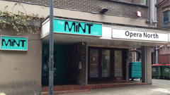

This is London’s top underground club there are other big underground clubs but fabric is the leading club with the different variety of different genres they play on a weekly bases from Dubstep, drum & base to house and minimal. The club has two big rooms and a third on the third floor.
On Saturdays the Fabric nzight are showcased for the biggest international underground artist playing the best house electro and dub techno. These nights have recently started from 2012, which has taken over from the dying grime, niche and UK funky scene. The deep sounds have been growing overseas since 1990’s but recently have taken over from our Dubstep and Drum & Bass the new sounds have also excelled our home grown DJs such as Julio Bashmore and Heidi.
FabricLive is a Friday night show for fabric which still plays our own music from the best Dubstep, Drum & Bass and Grime. Top DJs in London play there every month artists such as DJ Hype, Skream DJ EZ play the unique and keep fabric going strong. Fabric is open every weekend in the year like a normal club.
A once in a lifetime experience in Manchester with up to 6,000 raves on the biggest night, which makes warehouse the biggest underground club in the UK .Warehouse project may not be on every week but when on every night is roughly a sell out and has commuters from up and down the country travelling there.
First location was under Piccadilly train station away in a quite location from the town centre, with a famous name now (Store Street) where WHP was born. The location was only open for 12 weeks from September to the New Year with two to three nights on a week playing the best in Dubstep first and comical house but as years move on underground house has started to take over.
2012 was the last of Store Street as the Warehouse Project Team were looking for a new location to expand the capacity and have more nights on throughout the year. The new location has become into question, however 2013 the ravers have settle into their new home maybe not much like (Store Street) but same people and a new home.
Smallest of the other two previous clubs but an unforgettable experience with around 550 people capacity but is regarded as one of the best small clubs in the UK. Every year from 2008 the club goes through refurbishment focusing on the best sound systems and high quality equipment to keep mint club a top experience for party goers.
The warehouse is a newer club acquired to hold bigger nights for the Leeds community. The warehouse has a beautiful outside display with nice sit down areas and a military style covering the whole outside to make a nice effect. This club has two room a big main room and if it’s not too cold a second room next to the outside terrace.